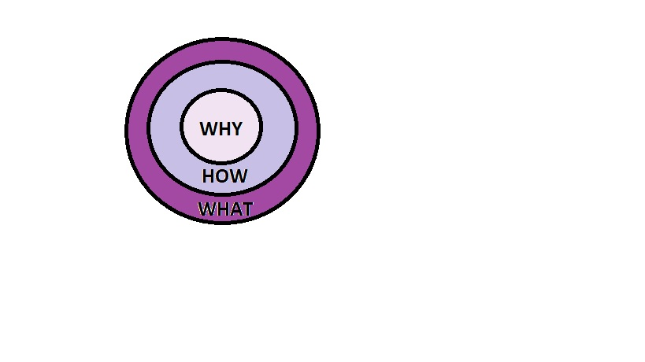

Career Buddy: Brandon Calloway
My Learning Style
- Auditory: 45%
- Visual: 35%
- Tactile: 20%
Quantitative Accomplishments:
- Hired, trained and mentored 6 employees that helped increase productivity by 20% for resort night staff.
- Added 4 new lines of service per month for 12 months for a mobile carrier.
- Designed and sewed 8 skirts for a flamenco dance group.
Qualitative Accomplishments:
- Attention to details has helped me receive a promotion at a cleaning position. After learning all the expectations, I was thorough in not only cleaning tasks, but logging the tasks and creating plans to finish larger job. This quality proved to also be a weakness because the staff felt like I was asking too much of them.
- Leadership was the skill my boss seen in me that helped him decide to promote me. The project lists and timelines I created and shared with the team and received their buy in was my leadership in action. This skill was a weakness in a conversation with my boss. He was proposing a schedule that I did not agree with for the team. I took it upon my self to speak for them as their "leader" without actually presenting them with the schedule and receiving feedback.
- Adaptablity helped me adhere to the new schedule. I was able to adjust my timelines for daily duties and for the long term projects. This became a weakness because I was adapting more than myself or my crew could handle.
Golden Circle

Why: I want to empower the Navajo people via education of available resources from housing to voting rights.
How: I will accomplish this through building sites for the Navajo community that are user friendly and available in Dine.
What: I am an aspiring fullstack web developer.